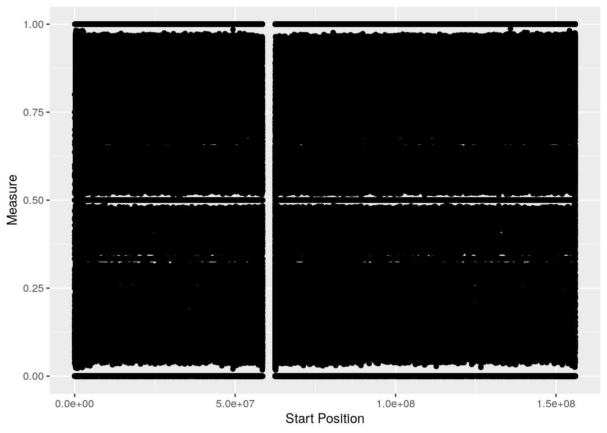
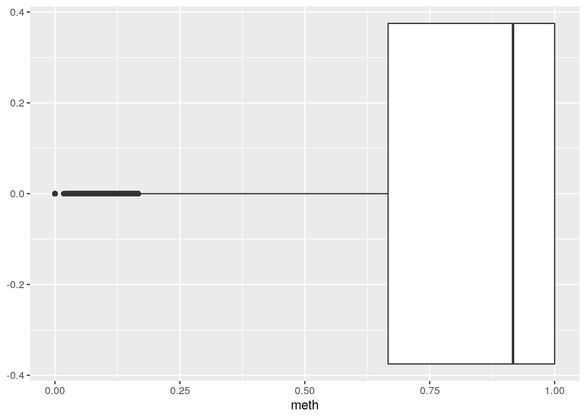
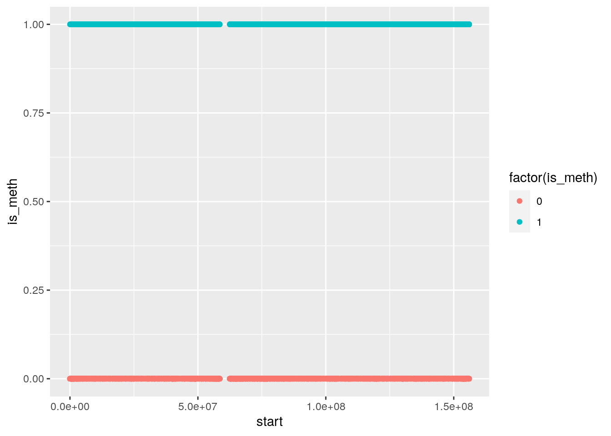
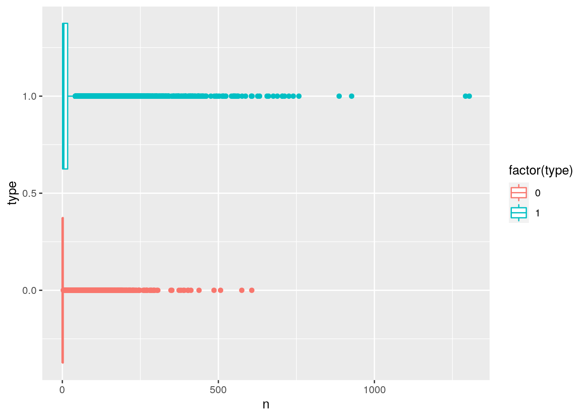
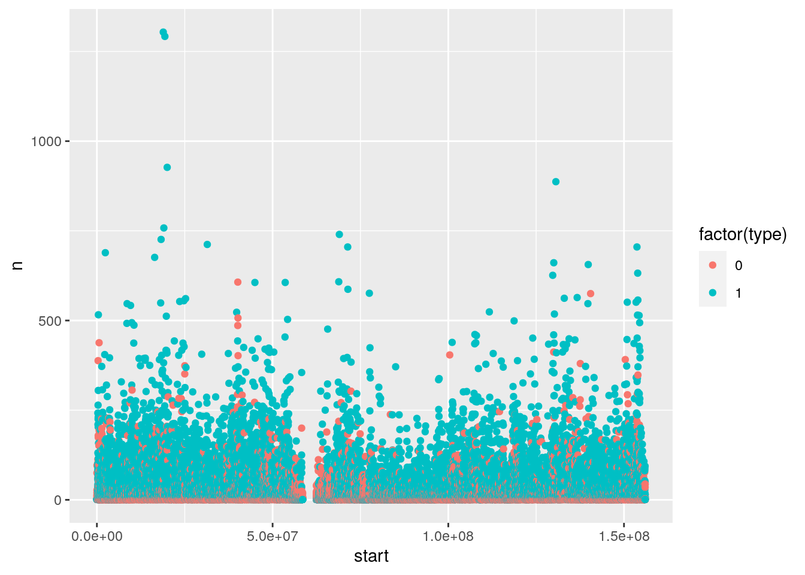
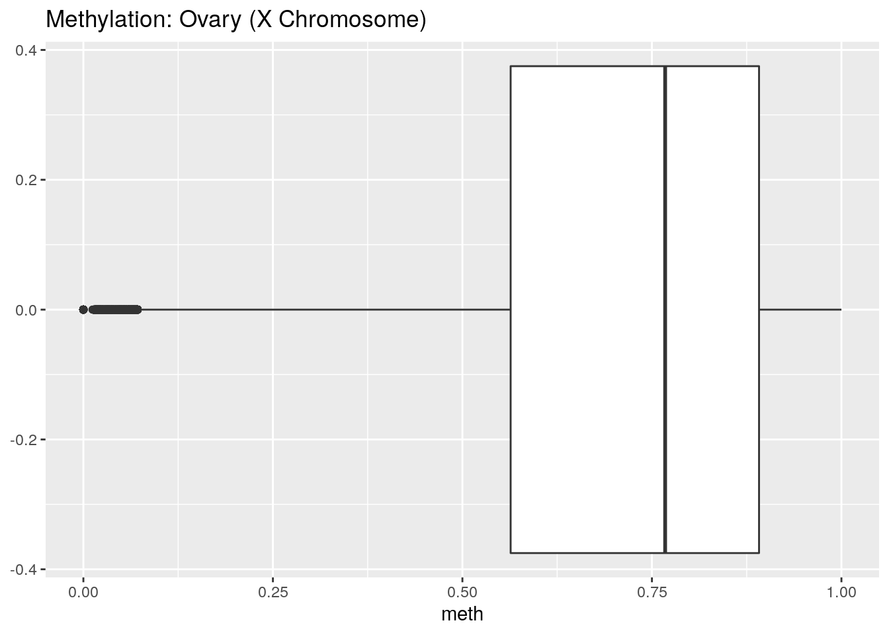
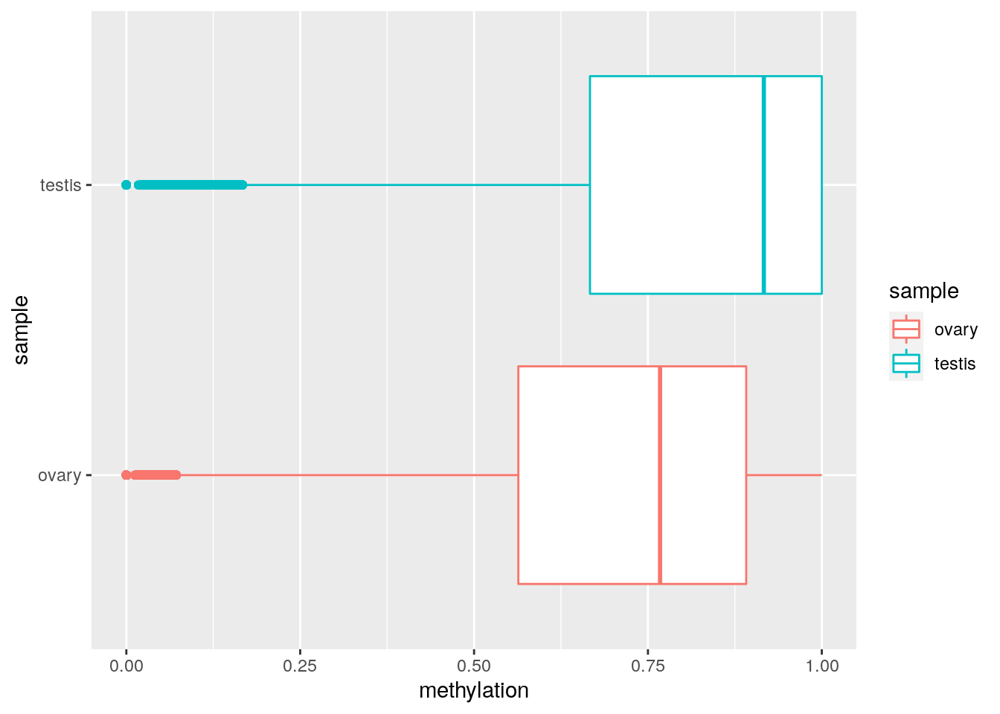
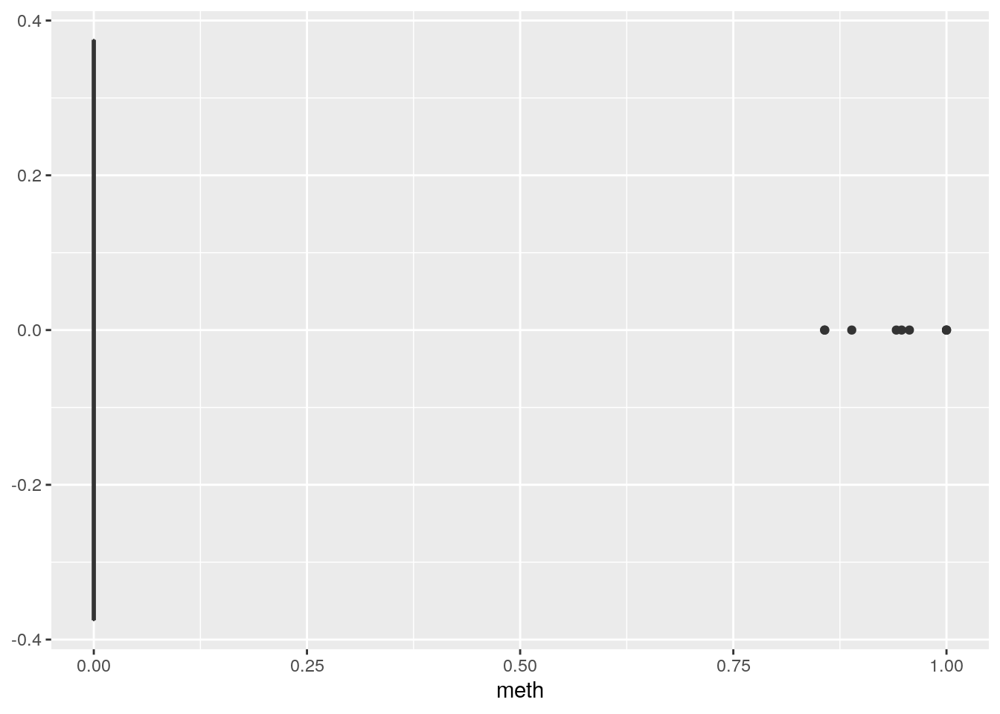

Last updated: 2022-05-25
Checks: 5 2
Knit directory: phasing/
This reproducible R Markdown analysis was created with workflowr (version 1.7.0). The Checks tab describes the reproducibility checks that were applied when the results were created. The Past versions tab lists the development history.
The R Markdown is untracked by Git. To know which version of the R
Markdown file created these results, you’ll want to first commit it to
the Git repo. If you’re still working on the analysis, you can ignore
this warning. When you’re finished, you can run
wflow_publish to commit the R Markdown file and build the
HTML.
Great job! The global environment was empty. Objects defined in the global environment can affect the analysis in your R Markdown file in unknown ways. For reproduciblity it’s best to always run the code in an empty environment.
The command set.seed(20220221) was run prior to running
the code in the R Markdown file. Setting a seed ensures that any results
that rely on randomness, e.g. subsampling or permutations, are
reproducible.
Great job! Recording the operating system, R version, and package versions is critical for reproducibility.
Nice! There were no cached chunks for this analysis, so you can be confident that you successfully produced the results during this run.
Using absolute paths to the files within your workflowr project makes it difficult for you and others to run your code on a different machine. Change the absolute path(s) below to the suggested relative path(s) to make your code more reproducible.
| absolute | relative |
|---|---|
| /net/snowwhite/home/beckandy/research/phasing/output/19april22_switch_errors/switch_errors/eagle/annotated | output/19april22_switch_errors/switch_errors/eagle/annotated |
| /net/snowwhite/home/beckandy/research/phasing/output/19april22_switch_errors/switch_errors/shapeit/annotated | output/19april22_switch_errors/switch_errors/shapeit/annotated |
Great! You are using Git for version control. Tracking code development and connecting the code version to the results is critical for reproducibility.
The results in this page were generated with repository version c753b7c. See the Past versions tab to see a history of the changes made to the R Markdown and HTML files.
Note that you need to be careful to ensure that all relevant files for
the analysis have been committed to Git prior to generating the results
(you can use wflow_publish or
wflow_git_commit). workflowr only checks the R Markdown
file, but you know if there are other scripts or data files that it
depends on. Below is the status of the Git repository when the results
were generated:
Ignored files:
Ignored: .Rhistory
Ignored: .Rproj.user/
Ignored: data/first_attempt/
Ignored: data/ovary/
Ignored: data/ref/
Ignored: data/shapeit/
Ignored: output/11april22_switch_errors/
Ignored: output/14mar22_switch_errors/
Ignored: output/16mar22_switch_errors/
Ignored: output/18mar22_switch_errors/
Ignored: output/19april22_switch_errors/
Ignored: output/background_rates/
Ignored: output/switch_error_test/
Ignored: sandbox/
Untracked files:
Untracked: Rplots.pdf
Untracked: analysis/Rplots.pdf
Untracked: analysis/first_phase_test.Rmd
Untracked: analysis/first_phasing_results.Rmd
Untracked: analysis/gc_content.Rmd
Untracked: analysis/methylation_explore.Rmd
Untracked: analysis/shift_error_ex.Rmd
Untracked: code/add_meth.R
Untracked: code/background_3mer.py
Untracked: code/background_dimer.py
Untracked: code/batch_add_meth.sh
Untracked: plink.log
Unstaged changes:
Modified: analysis/build_a_vcf.Rmd
Modified: analysis/captains_log.Rmd
Modified: analysis/data_exploration.Rmd
Modified: analysis/masked_diploid_results.Rmd
Modified: code/batch_annotate_switch.sh
Modified: code/batch_diploid_analysis.sh
Modified: code/sample_X_pairs.R
Note that any generated files, e.g. HTML, png, CSS, etc., are not included in this status report because it is ok for generated content to have uncommitted changes.
There are no past versions. Publish this analysis with
wflow_publish() to start tracking its development.
File: data/methylation_chrX.bed
meth_df <- read_tsv("data/methylation_chrX.bed",
col_names = c("chrom", "start", "stop", "meth"))Rows: 1105885 Columns: 4
── Column specification ────────────────────────────────────────────────────────
Delimiter: "\t"
chr (1): chrom
dbl (3): start, stop, meth
ℹ Use `spec()` to retrieve the full column specification for this data.
ℹ Specify the column types or set `show_col_types = FALSE` to quiet this message.meth_df %>%
head() %>%
knitr::kable()| chrom | start | stop | meth |
|---|---|---|---|
| chrX | 10152 | 10154 | 0.576923 |
| chrX | 10232 | 10234 | 0.411765 |
| chrX | 10330 | 10332 | 0.750000 |
| chrX | 10334 | 10336 | 0.350000 |
| chrX | 10336 | 10338 | 0.300000 |
| chrX | 10364 | 10366 | 0.684211 |
Let’s plot these values by position:
meth_df %>%
ggplot(aes(x = start, y = meth)) +
geom_point() +
xlab("Start Position") +
ylab("Measure")
Wow, very helpful; let’s take a look at the distribution of the range of values for the measure:
meth_df %>%
ggplot(aes(x = meth)) +
geom_boxplot()
Okay, so if I use the rule >50% = methylated, what does our distribution of methylated vs unmethylated sites look like?
meth_df %>%
mutate(is_meth = meth > 0.5) %>%
tabyl(is_meth) is_meth n percent
FALSE 226249 0.2045864
TRUE 879636 0.7954136meth_df[sample(1:nrow(meth_df), 50000, replace = F),] %>%
mutate(is_meth = as.numeric(meth > 0.5)) %>%
ggplot(aes(x = start, y = is_meth, colour = factor(is_meth))) +
geom_point()
Other things I might want to look at?
meth_df <- meth_df %>%
mutate(is_meth = as.numeric(meth > 0.5))
write_csv(meth_df, file = "output/meth_locations.csv")meth_runs <- function(df){
final <- data.frame(start = numeric(), end = numeric(), type = numeric(), n = numeric())
current_start <- df$start[1]
current_end <- df$stop[1]
current_type <- df$is_meth[1]
counts <- 1
for(i in 2:nrow(df)){
if(df$is_meth[i] == current_type){
current_end = df$stop[i]
counts <- counts + 1
} else{
final <- bind_rows(final, data.frame(start = current_start, end = current_end, type = current_type, n = counts))
current_start = df$start[i]
current_end = df$stop[i]
current_type = df$is_meth[i]
counts <- 1
}
}
final <- bind_rows(final, data.frame(start = current_start, end = current_end, type = current_type, n = counts))
return(final)
}runny_meth <- meth_runs(meth_df)runny_meth %>%
ggplot(aes(x = n, y = type, group_by = factor(type), colour = factor(type))) +
geom_boxplot()
runny_meth %>%
ggplot(aes(x = start, y = n, colour = factor(type))) +
geom_point()
ovary_df <- read_tsv("data/ovary/ovary_chrX.bed",
col_names = c("chrom", "start", "stop", "meth"))Rows: 1160115 Columns: 4
── Column specification ────────────────────────────────────────────────────────
Delimiter: "\t"
chr (1): chrom
dbl (3): start, stop, meth
ℹ Use `spec()` to retrieve the full column specification for this data.
ℹ Specify the column types or set `show_col_types = FALSE` to quiet this message.all_meth <- full_join(ovary_df, meth_df, by = c("chrom", "start", "stop")) %>%
rename(ovary = meth.x, testis = meth.y)
all_meth %>% summary() chrom start stop ovary
Length:1173205 Min. : 10152 Min. : 10154 Min. :0.000
Class :character 1st Qu.: 31437449 1st Qu.: 31437451 1st Qu.:0.564
Mode :character Median : 71664463 Median : 71664465 Median :0.767
Mean : 74689884 Mean : 74689886 Mean :0.700
3rd Qu.:119024089 3rd Qu.:119024091 3rd Qu.:0.891
Max. :156029919 Max. :156029921 Max. :1.000
NA's :12989
testis is_meth
Min. :0.00 Min. :0.0
1st Qu.:0.67 1st Qu.:1.0
Median :0.92 Median :1.0
Mean :0.75 Mean :0.8
3rd Qu.:1.00 3rd Qu.:1.0
Max. :1.00 Max. :1.0
NA's :67180 NA's :67180 ovary_df %>%
ggplot(aes(x = meth)) +
geom_boxplot() +
ggtitle("Methylation: Ovary (X Chromosome)")
all_meth %>%
remove_missing() %>%
ggplot(aes(x = testis, y = ovary)) + geom_point()all_meth %>%
select(testis, ovary) %>%
pivot_longer(testis:ovary, names_to = "sample", values_to = "methylation") %>%
ggplot(aes(x = methylation, y= sample, colour = sample)) + geom_boxplot()Warning: Removed 80169 rows containing non-finite values (stat_boxplot).
all_meth %>%
drop_na(ovary, testis) %>%
mutate(ov_m = ovary > 0.5, ov_t = testis > 0.5) %>%
select(ov_m, ov_t) %>%
xtabs(~ ov_m + ov_t, data = .) ov_t
ov_m FALSE TRUE
FALSE 96329 125445
TRUE 122497 748765get_flip_pos <- function(df){
flip_list <- c()
in_progress <- FALSE
for(i in 1:(length(df$pos_start)-1)){
if(df$pos_end[i] == df$pos_start[i+1]){
if(!in_progress){
in_progress <- TRUE
flip_list <- c(flip_list, df$pos_end[i])
} else{
in_progress <- FALSE
}
} else{
in_progress <- FALSE
}
}
return(flip_list)
}Let’s first take a look at a single pseudo-diploid and see what things look like.
eagle_dir <- "/net/snowwhite/home/beckandy/research/phasing/output/19april22_switch_errors/switch_errors/eagle/annotated"
shapeit_dir <- "/net/snowwhite/home/beckandy/research/phasing/output/19april22_switch_errors/switch_errors/shapeit/annotated"
id <- 1
s_file <- paste0(shapeit_dir, "/switch_meth_", id, ".csv")
e_file <- paste0(eagle_dir, "/switch_meth_", id, ".csv")
s_df <- read_csv(s_file)Rows: 961 Columns: 7
── Column specification ────────────────────────────────────────────────────────
Delimiter: ","
chr (2): motif_start, end_motif
dbl (5): pos_start, pos_end, cpg_start, cpg_end, meth
ℹ Use `spec()` to retrieve the full column specification for this data.
ℹ Specify the column types or set `show_col_types = FALSE` to quiet this message.e_df <- read_csv(e_file)Rows: 965 Columns: 7
── Column specification ────────────────────────────────────────────────────────
Delimiter: ","
chr (2): motif_start, end_motif
dbl (5): pos_start, pos_end, cpg_start, cpg_end, meth
ℹ Use `spec()` to retrieve the full column specification for this data.
ℹ Specify the column types or set `show_col_types = FALSE` to quiet this message.e_flip_list <- get_flip_pos(e_df)
s_flip_list <- get_flip_pos(s_df)
s_df$is_flip <- as.numeric(s_df$pos_start %in% s_flip_list)
e_df$is_flip <- as.numeric(e_df$pos_start %in% e_flip_list)s_df %>%
filter(cpg_start == 1) %>%
mutate(is_meth = meth > 0.5) %>%
ggplot(aes(x = meth)) + geom_boxplot()
e_df %>%
filter(cpg_start == 1) %>%
mutate(is_meth = meth > 0.5) %>%
pull(is_meth) %>% table().
FALSE TRUE
72 7 s_df %>%
filter(cpg_start == 1) %>%
filter(is_flip == 1) %>%
mutate(is_meth = meth > 0.5) %>%
pull(is_meth) %>% table().
FALSE TRUE
35 5 e_df %>%
filter(cpg_start == 1) %>%
filter(is_flip == 1)%>%
mutate(is_meth = meth > 0.5) %>%
pull(is_meth) %>% table().
FALSE TRUE
33 3
sessionInfo()R version 4.2.0 (2022-04-22)
Platform: x86_64-pc-linux-gnu (64-bit)
Running under: Ubuntu 18.04.6 LTS
Matrix products: default
BLAS: /usr/lib/x86_64-linux-gnu/openblas/libblas.so.3
LAPACK: /usr/lib/x86_64-linux-gnu/libopenblasp-r0.2.20.so
locale:
[1] LC_CTYPE=en_US.UTF-8 LC_NUMERIC=C
[3] LC_TIME=en_US.UTF-8 LC_COLLATE=en_US.UTF-8
[5] LC_MONETARY=en_US.UTF-8 LC_MESSAGES=en_US.UTF-8
[7] LC_PAPER=en_US.UTF-8 LC_NAME=C
[9] LC_ADDRESS=C LC_TELEPHONE=C
[11] LC_MEASUREMENT=en_US.UTF-8 LC_IDENTIFICATION=C
attached base packages:
[1] stats graphics grDevices utils datasets methods base
other attached packages:
[1] janitor_2.1.0 forcats_0.5.1 stringr_1.4.0 dplyr_1.0.9
[5] purrr_0.3.4 readr_2.1.2 tidyr_1.2.0 tibble_3.1.7
[9] ggplot2_3.3.6 tidyverse_1.3.1 workflowr_1.7.0
loaded via a namespace (and not attached):
[1] Rcpp_1.0.8.3 lubridate_1.8.0 getPass_0.2-2 ps_1.7.0
[5] assertthat_0.2.1 rprojroot_2.0.3 digest_0.6.29 utf8_1.2.2
[9] cellranger_1.1.0 R6_2.5.1 backports_1.4.1 reprex_2.0.1
[13] evaluate_0.15 httr_1.4.3 highr_0.9 pillar_1.7.0
[17] rlang_1.0.2 readxl_1.4.0 rstudioapi_0.13 whisker_0.4
[21] callr_3.7.0 jquerylib_0.1.4 rmarkdown_2.14 labeling_0.4.2
[25] bit_4.0.4 munsell_0.5.0 broom_0.8.0 compiler_4.2.0
[29] httpuv_1.6.5 modelr_0.1.8 xfun_0.31 pkgconfig_2.0.3
[33] htmltools_0.5.2 tidyselect_1.1.2 fansi_1.0.3 withr_2.5.0
[37] crayon_1.5.1 tzdb_0.3.0 dbplyr_2.1.1 later_1.3.0
[41] grid_4.2.0 jsonlite_1.8.0 gtable_0.3.0 lifecycle_1.0.1
[45] DBI_1.1.2 git2r_0.30.1 magrittr_2.0.3 scales_1.2.0
[49] vroom_1.5.7 cli_3.3.0 stringi_1.7.6 farver_2.1.0
[53] fs_1.5.2 promises_1.2.0.1 snakecase_0.11.0 xml2_1.3.3
[57] bslib_0.3.1 ellipsis_0.3.2 generics_0.1.2 vctrs_0.4.1
[61] tools_4.2.0 bit64_4.0.5 glue_1.6.2 hms_1.1.1
[65] parallel_4.2.0 processx_3.5.3 fastmap_1.1.0 yaml_2.3.5
[69] colorspace_2.0-3 rvest_1.0.2 knitr_1.39 haven_2.5.0
[73] sass_0.4.1